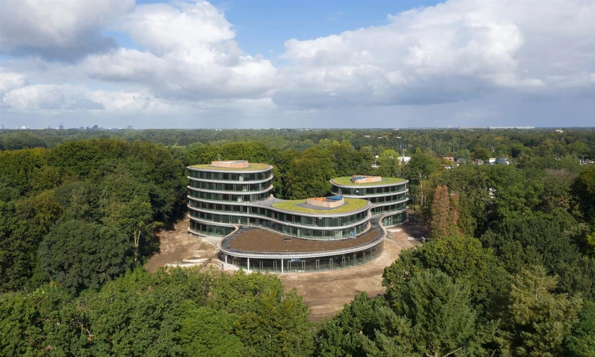
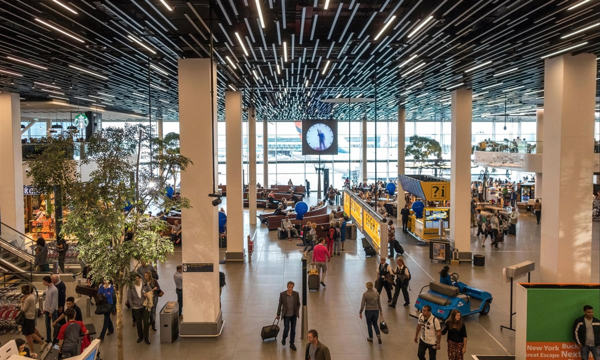
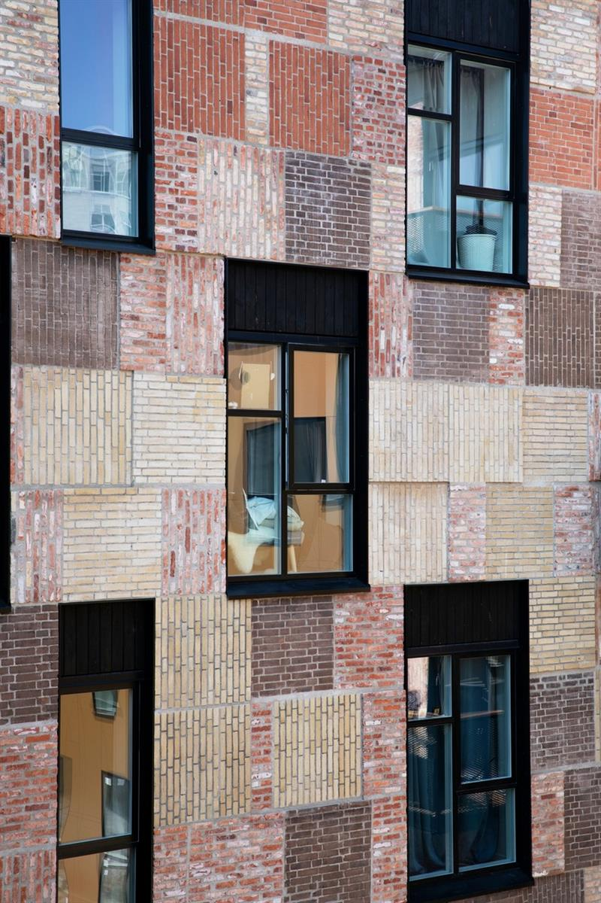
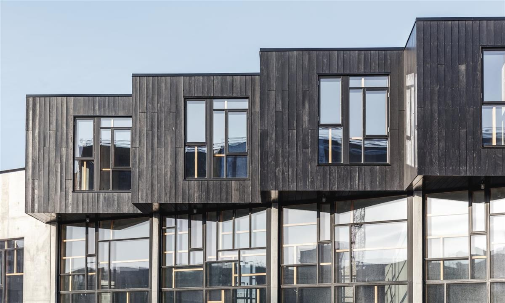
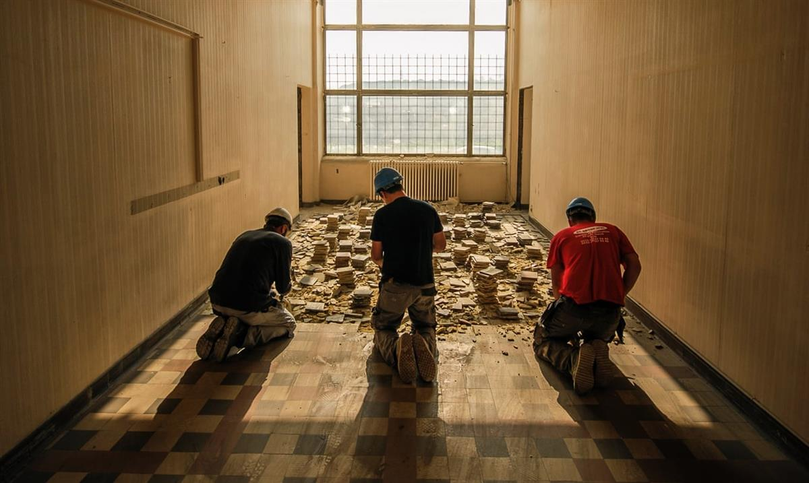
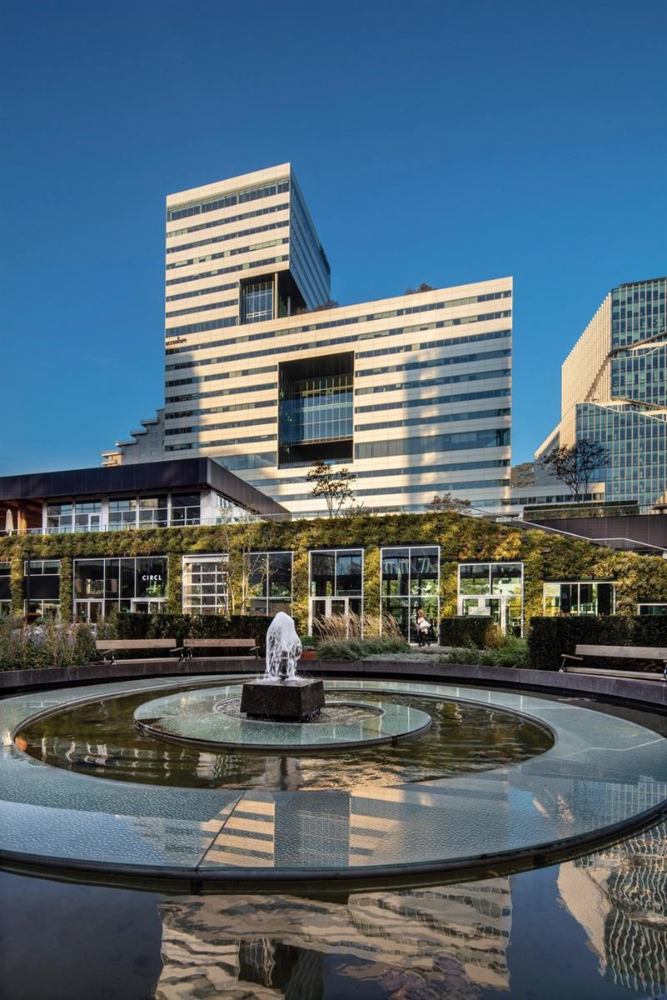

Should we start thinking of buildings as material depots, full of reusable resources for the next construction project? Photograph: Omar Marques/Echoes Wire/Barcroft Media
The construction industry is wasteful and creates huge CO2 emissions. But what if new buildings had to be adapted and resused or built only with materials already available?
Guardian Cities is concluding with ‘The case for ...”, a series of opinion pieces exploring options for radical urban change. Read our editor’s farewell here
The wrecking ball has always been the great symbol of urban progress, going hand in hand with dynamite and dust clouds as the politicians’ favourite way of showing they are getting things done. But what if we stopping knocking things down? What if every existing building had to be preserved, adapted and reused, and new buildings could only use what materials were already available? Could we continue to make and remake our cities out of what is already there?
We might have no choice, given the way our voracious urban consumption habits are going. In the UK, the construction industry accounts for 60% of all materials used, while creating a third of all waste and generating 45% of all CO2 emissions in the process. It is a greedy, profligate and polluting monster, gobbling up resources and spitting out the remains in intractable lumps. On our current course, we are set to triple material extraction in 30 years, and triple waste production by 2100. If we stand any chance of averting climate catastrophe, we must start with buildings – and stop conceiving them in the same way we have for centuries.

Ethical bank Triodos claim their new headquarters is the world’s first totally demountable office building. Photograph: Ossip van Duivenbode
This is not just about adding more solar panels, biomass boilers, and all the other bolt-on gadgets to tick the green assessment boxes. It requires a fundamental shift in our attitude to materials.
“We have to think of buildings as material depots,” says Thomas Rau , a Dutch architect who has been working to develop a public database of materials in existing buildings and their potential for reuse. There are now over 2.5m square metres of building matter logged in his Madaster database, and he is currently working with the city of Amsterdam to catalogue the components of every public building in the city. “Waste is simply material without an identity,” he says. “If we track the provenance and performance of every element of a building, giving it an identity, we can eliminate waste.”
He has developed the concept of “material passports”, a digital record of the specific characteristics and value of every material in a construction project, thereby enabling the different parts to be recovered, recycled and reused. His firm recently put the principle into practice with its new headquarters for Triodos, Europe’s leading ethical bank, which he says is the world’s first totally demountable office building. With a structure made entirely from wood, it has been designed with mechanical fixings so that every element can be reused, with all material logged and designed for easy disassembly.

In Schiphol Airport, Philips have installed lighting as a service, which it is thought will see a 50% reduction in energy consumption. Photograph: Wiskerke/Alamy
Rau’s arguments have gained traction. The Dutch government has now introduced tax incentives for developers who register material passports for their buildings, and it is considering making it a mandatory requirement for all new projects, in line with its ambition to achieve a circular economy by 2050. As the construction process is increasingly digitised, with the rise of Building Information Modelling (BIM), the material passport is merely another layer of data that can be easily incorporated and tracked throughout a building’s life.

Resource Rows, which used panels of brickwork taken from the demolition of Copenhagen’s Carlsberg brewery. Photograph: Mikkel Strange
Taking reuse to its logical conclusion, Rau sees a future where every part of a building would be treated as a temporary service, rather than owned. From the facade to the lightbulbs, each element would be rented from the manufacturer, who would be responsible for providing the best possible performance and continual upkeep, as well as dealing with the material at the end of its life. “Ownership blocks innovation,” he says. “Treating building elements as a service would remove planned obsolescence and increase transparency and responsibility.” He has already convinced the company Philips to offer lighting as a service (including at Schiphol airport , where they say the new fixtures will last 75% longer and see a 50% reduction in energy consumption), while elevator companies, toilet manufacturers and facade fabricators have since followed suit.
The Netherlands is not alone in its circular ambitions. In the race to become the greenest city on the planet, the Danish capital of Copenhagen has pledged it will be carbon neutral by 2025. “It’s an insane target,” says architect Anders Lendager. “But there’s nothing better for designers than politicians with mad goals looking for ways to achieve them.” His practice thinks it has some of the answers. It has just completed a housing development, called Resource Rows, that Lendager says represents a 50-60% reduction in CO2 compared to conventional construction, simply by reusing materials.
They saw an opportunity in the demolition of Copenhagen’s vast Carlsberg brewery, whose bricks wouldn’t usually have been reused because modern cement mortar makes it very difficult to separate them. Instead, they took an angle grinder to the walls and sliced them up in one metre square chunks, stacking the panels to form a striking patchwork facade for the new apartment block. Windows, meanwhile, have been reused to make greenhouse roofs for shared allotments. The green credentials have proved popular: the homes were rented out more quickly than any other housing scheme in the city.
Another of Lendager’s projects reaches closer to 70% CO2 reduction. Upcycle Studios, a terrace of live-work units, uses recycled concrete, reclaimed oak floors, aluminium from recycled cans, and new thermal windows made by combining two reclaimed double glazed panels. Concrete usually either ends up in landfill, or is crushed for use in roads, but this project shows that waste aggregate (1,700 tonnes of it) can make high quality new concrete, reducing the consumption of virgin materials by almost half.

Upcycle Studios uses recycled concrete, reclaimed oak floors, aluminium from recycled cans, and has created thermal windows by combining reclaimed double glazed panels. Photograph: Rasmus Hjortshøj – Coast
Like Rau, the Lendager Group has been campaigning for the construction industry to move towards a more circular model, but finding few receptive contractors, they decided to get on with it themselves. Discovering that few companies were willing to either dismantle buildings carefully enough for materials to be reused, or reuse second hand materials without warranties, they set up their own in-house demolition and construction arm, carrying out performance tests on reclaimed building components and taking on the liability.
There are similar initiatives underway across Europe, from Belgian group Rotor’s careful deconstruction of postwar office blocks , to Lacaton & Vassal’s exemplary retrofit work in France. But the kind of wholesale revolution that the industry needs can’t just rely on a few progressive architects willing to take on the entire process themselves. Nor can it depend on the moral conscience of a few enlightened clients. For a more circular conception of construction to take off, there must be an economic incentive

Belgian group Rotor salvage architectural materials and advocate for designing with reuse in mind. Photograph: Olivier Beart
“The moral argument simply doesn’t work,” says Rau. “We have to organise our thinking along the financial axis.” He calculates that, on average, the residual value of a building’s materials equates to around 18% of the original construction cost – a huge bonus to the bottom line, considering clients are usually saddled with the cost of disposing of demolition waste, rather than reaping any reward from it. “We have to show that materials are a valuable asset, rather than an expense to be lumbered with.”
One recent study found that the 2.6m tonnes of building material “released” each year through renovation and demolition in Amsterdam alone has a value of €688m . It is a financial opportunity that has caught the eye of Dutch bank giant ABN Amro, which presides over a €10.6bn commercial real estate portfolio. At the opening of its Circl pavilion in Amsterdam, a showcase building to demonstrate circular construction principles, one senior executive summed it up: “We are no longer just a financial bank, but a materials bank.” In a world of increasing scarcity, the windows, beams and slabs of their property empire will be valuable assets in themselves.

ABN Amro’s Circl pavilion in Amsterdam. Photograph: Frans Lemmens/Alamy
While much of mainland Europe is well on the way to reimagining buildings as “urban mines” of potential, the UK is slowly beginning to catch up. Architect Duncan Baker-Brown, who published the Re-Use Atlas in 2017, says the subject has gone from being a niche pursuit to something being discussed at high level in the last year.
“Since Greta Thunberg and Extinction Rebellion, the industry is starting to wake up,” he says. “National legislation is still way behind, but a lot of local authorities are getting on with it anyway.” He has been working with Brighton and Hove council to instil circular principles into the way local procurement works, and will be running an architectural summer school looking at how waste streams can be harvested from one of the council’s demolition sites and reused. In a welcome sign of progress, the new London Plan will require planning applications to include a Circular Economy Statement, demonstrating how the building components can be disassembled and reused.
Signalling a wider shift in the profession, the Architect’s Journal has joined the movement and launched a RetroFirst campaign, urging architects to prioritise refurbishment over demolition and new build. Along with suggesting changes to building regulations to encourage reuse, one of its primary demands is reforming a strange quirk of VAT which sees refurbishment and renovation projects taxed at 20%, while carbon-guzzling new-builds are exempt.
Architecture prizes are also indicating the change in mindset, in a welcome shift away from celebrating the signature baubles of the past. The World Building of the Year award was recently given to a retrofit project, which saw a former train shed in the Dutch city of Tilburg turned into a new public library . For two years in a row, the hallowed Mies van der Rohe Award has gone to radical renovations of maligned postwar housing estates: the Kleiburg in Amsterdam and the Grand Parc in Bordeaux have both been transformed by clever, light-touch interventions. The architects of the latter project, Lacaton & Vassal, have a rallying cry that all our cities would do well to adopt from now on: “Never demolish, never remove or replace, always add, transform, and reuse!”
SOURCE: THE GUARDIAN